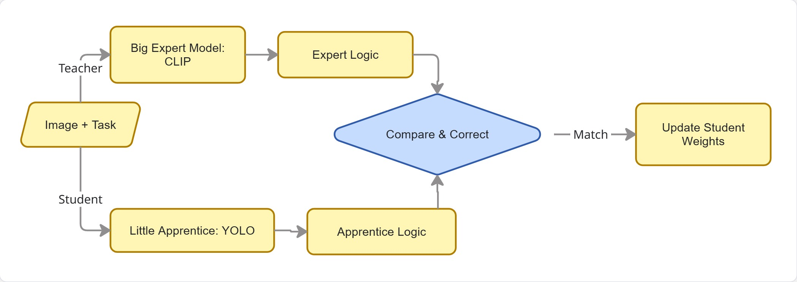

Task-Aware Object Detection for Resource-Constrained Edge Devices
Project Goal: To implement a lightweight, task-driven object detection pipeline on the VEGA Processor (FPGA) using the COCO dataset and 14 predefined tasks, optimizing for accuracy, latency, and power consumption.
1. System Overview
The baseline system is designed as a Dual-Encoder Cross-Modal Pipeline. It processes two distinct inputs—a visual stream (image) and a semantic stream (text task)—and fuses them to produce a task-specific detection.
2. Core Components
A. The Visual Encoder (YOLOv8 Backbone)
Role: Extracts spatial and textural features from the input image.
Mechanism: Uses the CSPDarknet53 architecture. As the image passes through the convolutional layers, it is transformed into a Feature Map ($F_{img}$).
Output: A multi-scale tensor representing the "visual essence" of the scene (edges, shapes, and object parts).
B. The Text Encoder (Semantic Embedding)
Role: Converts the natural language task (e.g., "Find something to sit on") into a numerical format the computer can understand.
Mechanism: A lightweight Transformer-based encoder (typically a distilled version of CLIP or DistilBERT).
Output: A Task Embedding Vector ($V_{task}$). This vector lives in a "semantic space" where the word "chair" and the word "sitting" are mathematically close to each other.
C. The Fusion Layer (Cross-Modal Attention Fusion - CMAF)
Role: To "highlight" parts of the image that are relevant to the text task.
Mechanism:Attention Mechanism. The system calculates the relationship between every pixel in the feature map and the task vector.
Query ($Q$): Derived from the Task Embedding.
Key ($K$): Derived from the Image Feature Map.
Value ($V$): The original visual data.
Result: A "weighted" feature map where irrelevant objects (like a cat when the task is "sitting") are mathematically suppressed, and relevant objects (like a chair) are amplified. doubtful about implementing this, cuz multiplication will be heavy on fpga
D. The Detection Head
Role: To draw the final bounding box.
Mechanism: A regression layer that takes the fused features and predicts coordinates $(x, y, w, h)$ and a "Task-Relevance Score."
3. Hardware Optimization
Fixed-Integer Quantization (INT8)
The VEGA Processor and Genesys-2 FPGA are optimized for Fixed-Point Arithmetic rather than Floating-Point.
The Baseline Requirement: The model weights ($W$) and activations must be converted from 32-bit Decimals (Float32) to 8-bit Integers (INT8).
Implementation: This involves a Scaling Factor. For example, a decimal weight of 0.007 might be represented as the integer 2.
Why it's required: Standard FPGAs lack the complex circuitry to do fast decimal math. Integer math is significantly faster and uses 4x less memory and power.
4. Inference Workflow (Summary)
Input: User provides an Image ($I$) and a Task ($T$).
Encoding: Image goes through YOLO; Task goes through Text-Encoder.
Fusion: The Attention layer "masks" the image based on the Task.
Quantization: All math is performed using Fixed-Integer logic on the VEGA Processor.
Output: The system identifies the coordinates of the most appropriate object.
Idea 1: Task-Conditional Dynamic Sparsity (Gating)
1.1 Description
This approach focuses on Computational Efficiency. Conventional models run the entire network architecture regardless of the task. Dynamic Sparsity introduces a "Gating Mechanism" that uses the task prompt to identify and "switch off" irrelevant feature channels in the YOLO backbone at runtime.
The Innovation: Instead of static pruning (permanent removal of weights), we use Runtime Gating. If the task is "Cutting," the model suppresses features related to "soft textures" or "organic shapes," focusing only on "metallic/sharp" features. This reduces the number of active multiplications, directly benefiting the FPGA's power profile.
1.2 Existing Literature & Similar Works
Gated Linear Units (GLU):Dauphin et al., "Language Modeling with Gated Convolutional Networks" (2017). Introduced the concept of using one neural path to gate another.
Dynamic Channel Pruning:Gao et al., "Dynamic Channel Pruning: Feature-Aware Optimization for Efficient Model Inference" (2018). Focuses on skipping channels based on input images. couldnt find the paper
Task-Aware Feature Modification:Li et al., "Task-Aware Feature Generation for Zero-Shot Object Detection" (2020). Uses task information to modify how features are processed. paper name wrong, inspect
1.3 State-of-the-Art (SOTA)
SOTA in Dynamic Networks:Han et al., "Dynamic Neural Networks: A Survey" (2021). This is the comprehensive guide to networks that change their structure based on input.
SOTA in Hardware Gating:Wang et al., "SkipNet: Learning Dynamic Routing in Convolutional Networks" (2018). Focuses on skipping entire layers to save energy on mobile hardware.
Idea 2: Semantic Affordance Knowledge Distillation (KD)
2.1 Description
This approach focuses on Intelligence and Reasoning. Small models like YOLOv8 often lack the "common sense" to know which object fits a complex task (e.g., "What should I use to fix a hole?").
The Innovation: We use a "Teacher" model (a large Vision-Language Model like CLIP) to teach the "Student" (YOLOv8) the Functional Affordances of objects.
The Process: During training, the Teacher provides a high-dimensional semantic map of the image based on the task. The Student is trained to minimize the "hint loss"—trying to match the Teacher's sophisticated reasoning. Post-training, the Teacher is discarded, leaving a small model with "distilled intelligence."
2.2 Existing Literature & Similar Works
Foundational KD:Hinton et al., "Distilling the Knowledge in a Neural Network" (2015). The original paper on transferring knowledge between models.
Detection-Specific KD:Juneja et al., "Knowledge Distillation for Object Detection" (2019). One of the first to apply KD specifically to bounding boxes and class features.
Visual Affordance:Myers et al., "Affordance Detection of Tool Use from Simple Geometric Features" (2015). Early work on identifying objects by what they do rather than what they are.
2.3 State-of-the-Art (SOTA)
SOTA in Open-Vocabulary Detection:Gu et al., "ViLD: Open-vocabulary Object Detection via Vision and Language Knowledge Distillation" (ICLR 2022). This is the gold standard for using CLIP to teach a detector how to find objects based on text.
SOTA in Task-Driven Vision:Zeng et al., "Socratic Models: Composing Zero-Shot Multimodal Reasoning" (2022). Uses LLMs to provide the "reasoning" that vision models lack.
Summary Comparison for Proposal
Feature
Idea 1: Dynamic Gating
Idea 2: Semantic Distillation
Primary Goal
Power & Latency Optimization
Accuracy & Reasoning Optimization
CS Novelty
Conditional Computation / Gating
Cross-Modal Knowledge Transfer
FPGA Benefit
Lower switching activity (Power)
Smaller model size with higher IQ
Risk
Harder to implement in RTL/Hardware
Requires more complex training setup
Mathematical Framework for Proposed Novelties
Idea 1: Task-Conditional Dynamic Sparsity (Gating)
This novelty modifies the Baseline YOLO Layer to become "Context-Aware" by applying a multiplicative mask derived from the task text.
1.1 The Mathematical Expression
The output of a specific convolutional layer $l$ in your gated model is defined as:
$X_{l-1}$: The input feature map from the previous layer (Visual data).
$W_l$: The learned weights of the current YOLO layer.
$f(\cdot)$: The standard convolution operation.
$Z_{task}$: The Task Embedding generated by the Text Encoder.
$\mathcal{G}(\cdot)$: The Gating Network (a small 2-layer MLP).
$W_g$: The weights of the Gating Network.
$\sigma$: The Sigmoid Activation Function, ensuring the gate values are in the range $[0, 1]$.
$\odot$: The Hadamard Product (Element-wise multiplication).
$Y_l$: The resulting "Task-Filtered" feature map.
1.3 Step-by-Step Generation
Semantic Projection: The task vector $Z_{task}$ is passed through $\mathcal{G}$ to calculate which visual "concepts" are relevant.
Gate Generation: A vector of coefficients (the gates) is generated. A value near 1 means "keep this feature," and near 0 means "discard."
Active Filtering: The image features are multiplied by these coefficients. Irrelevant visual noise (like background or non-task objects) is mathematically zeroed out.
1.4 Training Method: Sparsity-Inducing Loss
To force the model to actually "turn off" neurons (to save power), we add a Sparsity Penalty to the training loss:
$$L_{total} = L_{detection} + \lambda \sum |\sigma(\mathcal{G}(Z_{task}))|$$
Reasoning: The $L_1$ regularization ($\lambda$ term) rewards the model for making the gates as close to zero as possible without losing detection accuracy.
Idea 2: Semantic Affordance Knowledge Distillation (KD)
This novelty transfers "Functional Reasoning" from a Large Teacher (CLIP) to the Small Student (YOLO) without increasing the Student's hardware footprint.
2.1 The Mathematical Expression
The training objective is to minimize the distance between the Teacher’s high-level understanding and the Student’s output:
$\Phi_{T}(I, T)$: The Teacher’s Feature Map. This is the "gold standard" reasoning for an image $I$ and task $T$.
$\Phi_{S}(I, T)$: The Student’s Feature Map (from your YOLO model).
$\text{MSE}$: Mean Squared Error, calculating the average squared difference between the two brains.
$\mathcal{P}$: A Projection Layer. Since the Teacher is "bigger," its feature map might be 1024-wide, while the Student is only 256-wide. $\mathcal{P}$ is a small matrix that resizes the Student's features to match the Teacher's for comparison.
$L_{KD}$: The Distillation Loss.
2.3 Step-by-Step Generation
Teacher Inference: The heavy model (Teacher) processes the image and task. It identifies "Affordance regions" (e.g., it "sees" that a handle is for "gripping").
Student Inference: The light model (Student) tries to do the same.
Alignment: The Student's output is compared to the Teacher's.
Error Correction: The Student’s weights are updated to mimic the Teacher’s internal representation.
2.4 Training Method: Multi-Task Learning
The model is trained using a composite loss function:
$$L_{final} = L_{YOLO} + \beta L_{KD}$$
Phase 1 (Training): Both models run. The Student learns from the Teacher.
Phase 2 (Deployment): The Teacher is removed. The Student now operates independently on the VEGA processor, but it retains the "reasoning" it learned during Phase 1.
Hardware Constraint Note: The Integer Transformation
For both ideas, the variables ($W, Y, \Phi$) must eventually undergo Quantization:
$$Q(x) = \text{clamp}\left( \lfloor \frac{x}{S} \rceil + Z, -128, 127 \right)$$
$S$ (Scale): Determines how much "decimal" we keep.
$Z$ (Zero-point): Shifts the range to fit 8-bit integers.
Constraint: On the VEGA processor, the $\odot$ (multiplication) in the Gating idea will be performed as Fixed-Point Multiplication, which is essentially an integer multiply followed by a bit-shift.
1. The Difference: Attention vs. Gating
Think of them like this:
Attention is like a Searchlight. Every pixel in the image "looks" at every word in the task to see how they relate. It is very detailed but very expensive (Math: $O(N^2)$).
Gating is like a Filter. The task text creates a "Master Key" (the gate). This key is applied to the whole image at once to turn specific feature channels on or off. It is much faster (Math: $O(N)$).
Is gating based on attention?
Technically, yes. Gating is often called "Global Cross-Attention." Instead of every pixel looking at every word individually, the entire image looks at the entire task once.
2. The FPGA Problem: Why "Full Attention" is Heavy
In the Baseline I described earlier, I mentioned "Attention Fusion." However, on a Genesys-2 FPGA/VEGA processor:
Memory Bottleneck: Standard Attention requires a "Similarity Matrix" ($QK^T$). If your image has 10,000 "patches," that matrix is $10,000 \times 10,000$. This will crash the FPGA's on-chip memory (BRAM).
Softmax Difficulty: Attention requires the Softmax function ($e^x$). Calculating exponents on a Fixed-Integer processor is extremely slow and inaccurate.
3. The "Gating" Solution: Making it FPGA-Friendly
This is why Idea 1 (Gating) is actually your Novelty. You are taking the "Heavy Attention" required for task-awareness and replacing it with "Lightweight Channel Gating."
How the Math changes to save the FPGA:
Instead of Full Attention:
$$\text{Output} = \text{Softmax}(Q \cdot K^T) \cdot V \quad \leftarrow \text{[Too heavy for VEGA]}$$
You use Task-Gating:
$$\text{Output} = \text{Gate}(\text{Task}) \odot \text{Features}(\text{Image}) \quad \leftarrow \text{[Perfect for VEGA]}$$
Why it's better: You only do one multiplication per feature channel.
Why it's still "Attention": It's still focusing on what's important, but it's doing it at the Channel Level instead of the Pixel Level.
Detailed Project Methodology
Phase 1: Preparation (Setting the Foundation)
1. Task Semantic Mapping
What is happening: We take the 14 tasks (like "Cutting" or "Pouring") and turn them into "Brain Language."
How to do it: We feed each task into a tiny pre-trained Language Model (like DistilBERT). This creates 14 "Task Vectors." Think of these as a unique 128-digit code for each task.
Why: Instead of searching for a word, the computer is now searching for a mathematical concept.
2. Dataset "Cleaning"
What is happening: We filter the COCO dataset to focus on images that match our 14 tasks.
How to do it: We create a "Golden Table" that maps tasks to objects (e.g., Task: "Drink" -> Objects: "Cup," "Bottle," "Glass").
Phase 2: The Architecture (Baseline + Novelty 1: Gating)
This diagram shows how the Image and Text meet in the middle.
Step-by-Step Logic:
The Visual Path: The image goes through the YOLO backbone (the "Eyes"). It identifies colors, textures, and shapes.
The Semantic Path: The Task Vector goes through a "Gating MLP" (a few small math layers). This generates a set of Multipliers (between 0 and 1).
The Interaction: These multipliers act like Volume Knobs on the visual features.
Example: If the task is "Sitting," the "Knob" for "Furniture features" is turned to 100%, and the "Knob" for "Animal features" is turned to 0%.
The Final Decision: The Detection Head only sees the amplified "relevant" features, making its job much easier and more accurate.
Phase 3: The Training (Novelty 2: Distillation)
This happens only on your PC, not on the FPGA. This is how we make the model "smart."

Step-by-Step Logic:
The Expert (Teacher): We use a giant model (CLIP) that already knows everything. We ask it: "What in this image is best for this task?"
The Apprentice (Student): We ask your YOLO model the same thing.
The Correction: If the Apprentice is wrong, we calculate the difference (Loss) and force the Apprentice to change its "brain" to match the Expert.
Graduation: Once the Apprentice (YOLO) can predict as well as the Expert, we "delete" the Expert. The Apprentice is now "Smart" but still "Small."
Phase 4: Hardware Bridge
Now we prepare the model for the VEGA Processor.
1. Fake Quantization (Simulation)
What: We tell the model: "Pretend you can only use whole numbers (integers)."
How: During the last few rounds of training, we round off all the decimals. If the model's accuracy drops, it learns to adjust its weights to work better with whole numbers.
2. Bit-Shift Optimization
What: In the Gating layer, instead of multiplying by 0.5, we tell the computer to "Shift the bits to the right by 1."
How: We design the math so that our "Gating Knobs" are always powers of two (1, 0.5, 0.25). Bit-shifting is the fastest possible operation on an FPGA.
Phase 5: Final Deployment (On the Genesys-2 Board)
1. Exporting: We save the model as a list of integers.
2. Loading: The ECE team loads these integers into the VEGA processor's memory.
3. Real-Time Check:
The camera sees a scene.
The user types a task.
The VEGA processor does the "Bit-Shifts" and "Integer Math."
A box appears around the correct object in milliseconds.